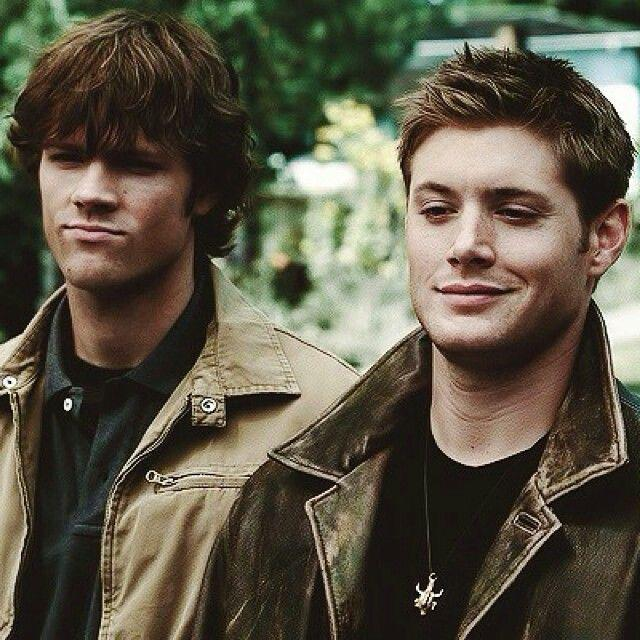
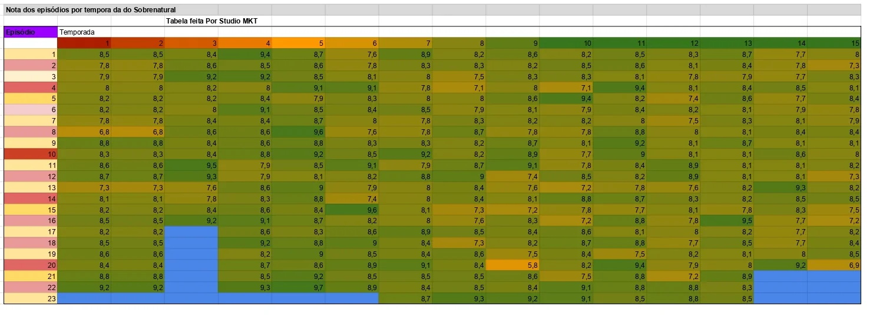

A Supernatural egy amerikai fantasy–horror sorozat, amely két testvér, Sam és Dean Winchester kalandjait követi, akik természetfeletti lényekkel harcolnak.

A sorozat története két testvér vadászatáról szól, akik démonok, szellemek, angyalok és más lények ellen harcolnak. Utazásuk során rengeteg veszéllyel találkoznak, miközben próbálják megmenteni az embereket és egymást.
A sorozat egyik híres mottója: „Saving people, hunting things – the family business.”
| Évad | Megjelenés éve |
|---|---|
| 1 | 2005 |
| 5 | 2009 |
| 10 | 2014 |
| 15 (utolsó) | 2020 |

Kép forrás: Reddit
Nézd meg az első évad trailer-ét itt: youtube
Ha érdekel itt tudod nézni: hbomax
Készítette: Szonda Martin, CDEDOT